Grand écran
Le menu est à gauche, regroupé pour le propriétaire : Vue d’ensemble, Réception, Entretien, Restaurant, Hôtel, Direction. La cloche ouvre les notifications. La photo ouvre le profil et la déconnexion.
MyHotel est le logiciel de l’hôtel : réception, sales, restaurant, direction et espace client. Ce guide explique chaque écran, et comment le robot bleu vous montre où cliquer pendant que MyHotel IA répond dans la messagerie.
Le menu change selon le rôle. Un réceptionniste ne voit pas la paie. Un agent des sales ne voit pas les réservations. Le propriétaire voit l’ensemble.
| Rôle | Compte de démonstration | Il s’en sert pour |
|---|---|---|
| Réception | receptioniste@gmail.com | Réservations, clients, caisse, rapport du jour |
| Gérance | gerant@gmail.com | Tout l’opérationnel, sans la paie ni les comptes employés |
| Sales | entretien@gmail.com | Chambres à faire, signalements, planning |
| Restaurant | restaurant@gmail.com | Commandes, carte, boissons, stock cuisine |
| Propriétaire | proprietaire@gmail.com | Tous les modules, personnel, paie, paramètres |
| Client | awa.client@gmail.com | Note, restaurant, nettoyage, messages |
Mot de passe de démonstration : password123.

Le menu est à gauche, regroupé pour le propriétaire : Vue d’ensemble, Réception, Entretien, Restaurant, Hôtel, Direction. La cloche ouvre les notifications. La photo ouvre le profil et la déconnexion.
Quatre raccourcis en bas, plus le bouton menu. Le robot reste au-dessus de cette barre. Les tableaux longs défilent de côté.
Le robot blanc, en bas à droite, est toujours là avec sa bulle de discussion. Il sert quand quelqu’un est devant vous et que vous n’avez pas le temps de chercher le bouton.
Les visites couvrent la réservation, l’annulation, la caisse, les rapports, les sales, le restaurant, la paie, l’espace client et la connexion. Les puces sous le chat lancent la visite la plus utile pour votre rôle. Sur un petit écran, le robot se réduit et reste au-dessus de la barre du bas.

Ouvrez Messagerie. MyHotel IA est épinglé en haut de la liste. Il guide uniquement : il montre la zone à toucher, étape par étape. Il ne donne aucun chiffre, aucun nom de client, aucun téléphone, aucune CNI et aucun salaire. La personne autorisée lit ces données elle-même sur l’écran.

L’accueil résume la journée : chambres libres, occupées, en entretien, en maintenance, arrivées, départs, clients en maison, ventes du jour. Le restaurant y voit ses commandes et ses alertes de stock. Les sales y voient l’urgence du ménage.
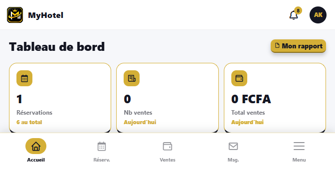
C’est l’écran du comptoir. Deux onglets : Chambres et Liste réservation.
Pour chercher une chambre sur des dates précises, ouvrez un type puis Rechercher une disponibilité.
Liste réservation filtre par nom, téléphone ou statut : Confirmée, En cours, Terminée, Annulée. Le crayon modifie le séjour. Annuler demande une confirmation. Le statut En cours correspond au client déjà arrivé.
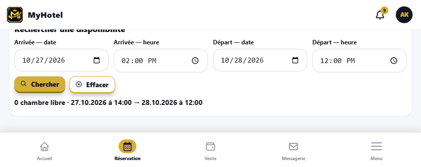

La fiche client est distincte du séjour. Nouveau client crée le compte : la personne pourra ensuite se connecter à son espace. La réservation du comptoir, elle, se fait dans Réservations même si le client n’a pas encore de compte.

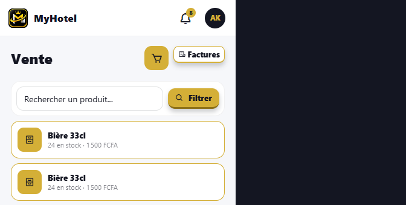
La réception obtient le rapport de la journée : séjours concernés, ses ventes, les ruptures de stock. La gérance et le propriétaire choisissent le type de rapport et la période, puis Imprimer ou Télécharger. Les colonnes suivent le type choisi : séjours, ventes, caisse, stock, entretien.
Le guide montre où ouvrir le rapport et où l’imprimer. Il ne lit pas les montants : ils restent sur l’écran, pour la personne autorisée.
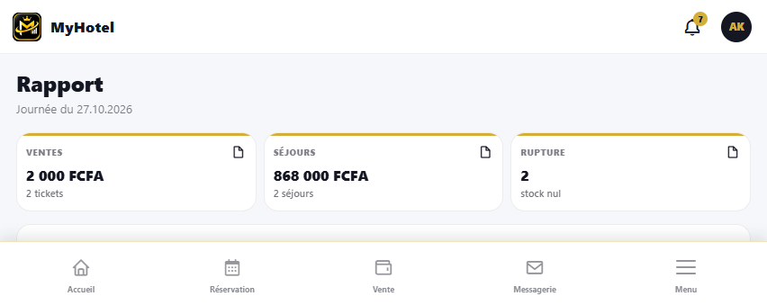
Le module Chambres est le catalogue : numéro, étage, tarif, photos, équipements, historique des séjours. On y consulte ou on met à jour une fiche. On n’y crée pas le séjour du client qui attend : cela reste dans Réservations.
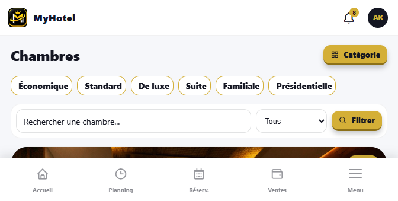
Chaque carte est une chambre à traiter. Filtrez par Urgence, Non pris en charge, En cours ou Maintenance. L’agent prend la chambre en charge, peut associer des aides, puis la marque prête. Une chambre prête redevient disponible pour la réception, après le délai prévu.
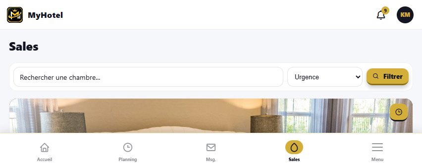
Une panne, une casse ou un oubli se signale depuis la chambre (bouton Signalement) ou depuis cet écran. Les états sont Ouvert, En attente, Résolu. L’agent voit ses signalements. La gérance suit toute la liste.

Les tâches encore ouvertes et les affectations du personnel. La gérance répartit. L’employé consulte ce qui lui est demandé. Le planning ne remplace pas l’écran Sales : il donne la vue du travail, Sales donne le geste sur la chambre.
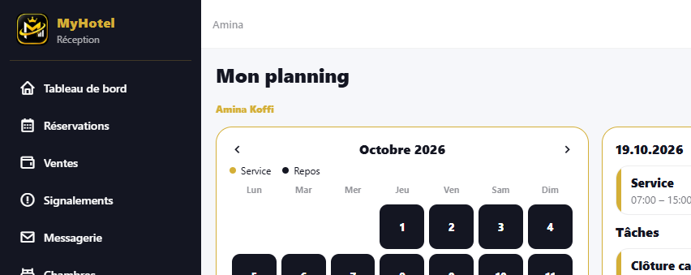
Nouveau ouvre la liste des collègues du rôle autorisé. Un client ne voit que la réception. On peut joindre un fichier (12 Mo maximum). MyHotel IA reste séparé de ces fils : ce n’est pas un employé, c’est l’assistant.
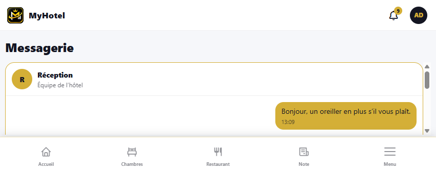
Ce qui est proposé aujourd’hui. La carte publique et la vente suivent cette sélection.
Les tickets à préparer et à servir. Le statut avance avec le service.
La caisse du restaurant. Encaissement immédiat ou report sur la chambre.
La carte permanente : prix, photo, disponibilité. Un plat retiré disparaît de la vente.
Le magasin cuisine. Sous le seuil, le plat lié ne doit plus être vendu.
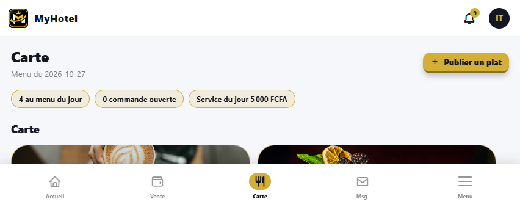
Économat est le stock de l’hôtel, distinct de la cuisine : quantités, seuils, mouvements. Personnel est réservé au propriétaire : création des comptes, rôle, contrat. Bannir un compte coupe l’accès et conserve l’historique. Paie reprend les montants des fiches. Vérifiez la période avant d’exporter.

Le propriétaire y met le nom commercial, la raison sociale, l’adresse, le téléphone, le NIF, le RCCM, le logo et le cachet. Ces éléments sortent sur les factures, les badges et les rapports PDF. Un logo flou ou un cachet manquant se voit donc sur tous les documents imprimés.

Après connexion, le client a son propre menu.
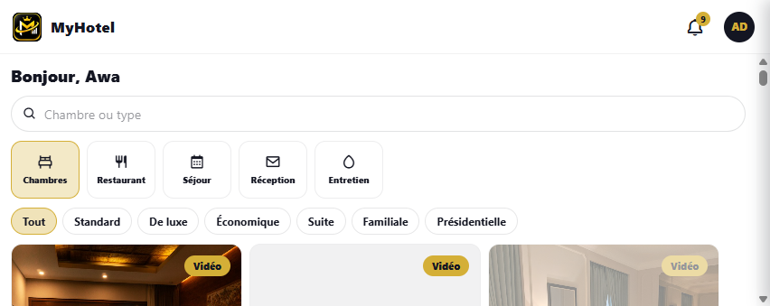
Sans compte, le visiteur parcourt l’accueil, l’hôtel, les services, les témoignages, les chambres et la carte du restaurant. Réserver un séjour ouvre les chambres. La création de compte se fait par S’inscrire. Le robot peut aussi guider ces premiers écrans.
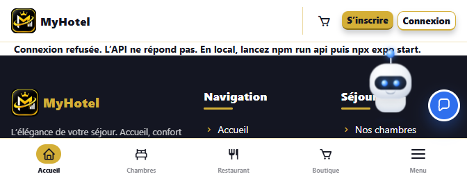
Pour ouvrir ce guide depuis l’hôtel en production : /documentation/. En local, le même dossier documentation s’ouvre dans le navigateur, ou via l’API sur le port 3847.